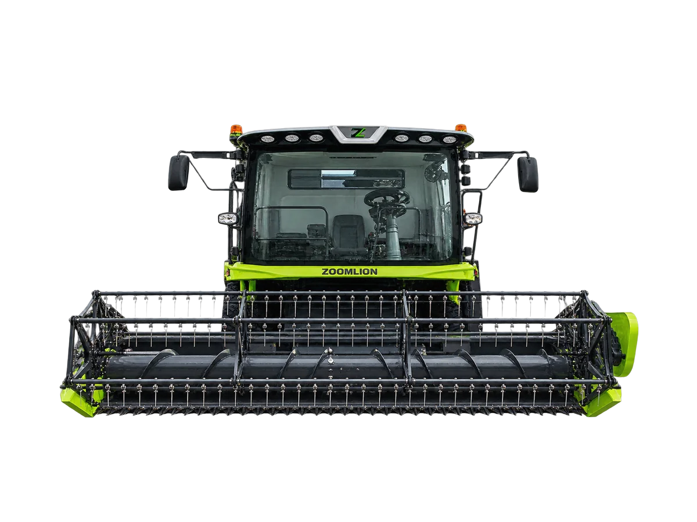

Traktor Hybrid
Zoomlion TE100-DH
Combine harvester hybrid pertama di dunia, dirancang untuk pemanenan berefisiensi tinggi pada berbagai komoditas seperti gandum dan jagung pipilan
Bandingkan dengan unit lain →Keunggulan
- Operasi efisien: pemantauan parameter mesin dan penggerak listrik secara real-time dipadukan kendali kecepatan jalan terkoordinasi meningkatkan efisiensi panen 15% dibanding model diesel konvensional
- Kendali presisi: dilengkapi sistem kontrol elektronik berperforma tinggi, putaran mesin tetap stabil tanpa penurunan tenaga sehingga mutu panen konsisten
- Operasi cerdas: kendali terkoordinasi memberikan proteksi anti-macet pada silinder perontok, sistem jalan electronic power-shift dengan rem parkir elektronik, serta penyetelan satu sentuhan untuk kecepatan silinder, reel, dan kipas
- Efisiensi energi: arsitektur hybrid penggerak listrik parsial menyederhanakan tata letak drivetrain dan menstabilkan keluaran mesin, menurunkan konsumsi energi keseluruhan hingga 30%
Spesifikasi
| Kapasitas Umpan | 10 kg/s |
|---|---|
| Dimensi | 6.100 × 2.900 × 3.420 mm (tanpa header) |
| Berat Operasi | 7.400 kg (tanpa header) |
| Jarak Rendah Ketanah | 330 mm |
| Model Mesin | Yuchai YCA05190-T300 |
| Tipe Mesin | 4 Silinder |
| Kapasitas Tangki BBM | 440 L |
| Sistem Perontokan | Single Axial Rotor |
| Ukuran Drum Perontok | ø620 × 3.180 mm |
| Putaran Drum Perontok | 0–1.200 rpm |
| Luas Area Separasi | 2,5 m² |
| Sistem Pembersihan | Air & Sieve Cleaning System |
| Kapasitas Hopper | 3,2 m³ |
| Kecepatan Pembongkaran | 60 L/s |
| Transmisi | Mechanical + HST |
| Ukuran Ban | 540/70R24 / 300/80R15.3 |
| Sistem Gerak | 2WD |
| Rigid Grain Header | 2,96 / 3,25 / 4 m — 726 / 785 / 895 kg |
| Soybean Flex Header | 4 m — 1.200 kg |
| Corn Header | 5×700 / 5×750 / 4×900 — 1.867 / 1.720 / 1.675 kg |
| Multi-Crop Header | 7×410 — 1.100 kg |
Tanya harga & ketersediaan unit
Tim kami siap membantu memilih unit yang sesuai kebutuhan lahan Anda.